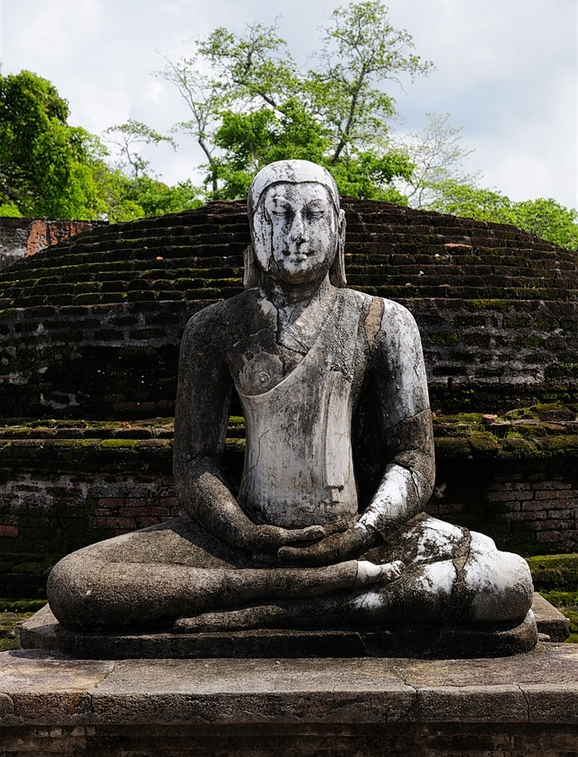

*srilanka also best ancient citiyes in the world specialey auradapauara , polonnanaruva , and mahanuvara best ancient cities in srilanka srilanka world historey rank about 40 The history of Sri Lanka is intertwined with the history of the broader Indian subcontinent and the surrounding regions, comprising the areas of South Asia, Southeast Asia and Indian Ocean. The early human remains found on the island of Sri Lanka date to about 38,000 years ago (Balangoda Man). The historical period begins roughly in the 3rd century, based on Pali chronicles like the Mahavansa, Deepavansa, and the Choolavansa. They describe the history since the arrival of Prince Vijaya from Northern India[1][2][3][4] The earliest documents of settlement in the Island are found in these chronicles. These chronicles cover the period since the establishment of the Kingdom of Tambapanni in the 6th century BCE by the earliest ancestors of the Sinhalese. The first Sri Lankan ruler of the Anuradhapura Kingdom, Pandukabhaya, is recorded for the 4th century BCE. Buddhism was introduced in the 3rd century BCE by Arhath Mahinda (son of the Indian emperor Ashoka). The island was divided into numerous kingdoms over the following centuries, intermittently (between CE 993–1077) united under Chola rule. Sri Lanka was ruled by 181 monarchs from the Anuradhapura to Kandy periods.[5][unreliable source?] From the 16th century, some coastal areas of the country were also controlled by the Portuguese, Dutch and British. Between 1597 and 1658, a substantial part of the island was under Portuguese rule. The Portuguese lost their possessions in Ceylon due to Dutch intervention in the Eighty Years' War. Following the Kandyan Wars, the island was united under British rule in 1815. Armed uprisings against the British took place in the 1818 Uva Rebellion and the 1848 Matale Rebellion. Independence was finally granted in 1948 but the country remained a Dominion of the British Empire until 1972. In 1972 Sri Lanka assumed the status of a Republic. A constitution was introduced in 1978 which made the Executive President the head of state. The Sri Lankan Civil War began in 1983, including Insurrections in 1971 and 1987, with the 25-year-long civil war ending in 2009. There was an attempted coup in 1962 against the government under Sirimavo Bandaranaike.
